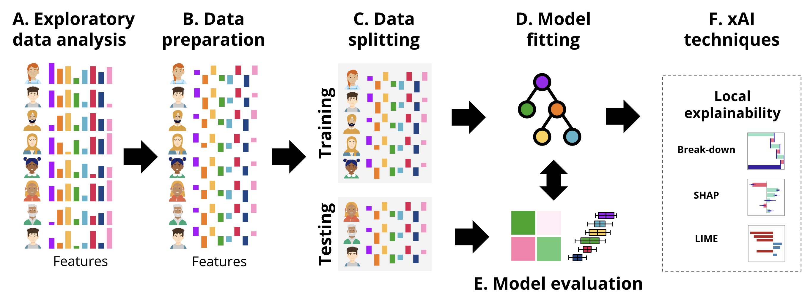
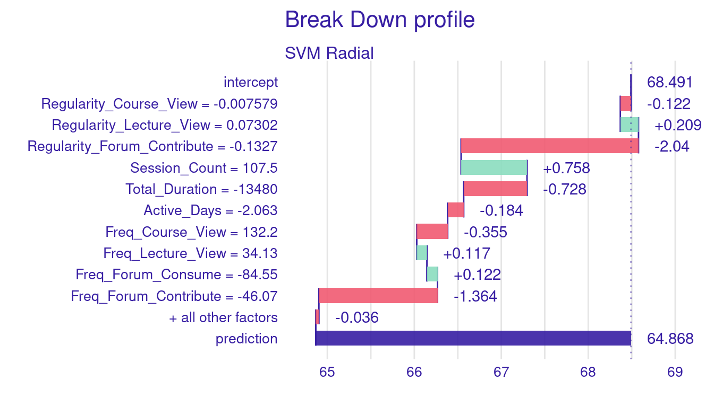

# Set a seed for reproducibility of results
set.seed(265)7 Individualized Explainable Artificial Intelligence: A Tutorial For Identifying Local and individual Predictions
Abstract
In the context of explainable artificial intelligence, global explanations provide aggregate insights about the performance and factors influencing a machine learning model, as we have seen in the previous chapter. However, local explanations are needed to understand the factors influencing a specific decision that affect an individual. For instance, local explanations could help teachers understand why a certain student was flagged as at-risk of dropping out a course, fostering transparency and trust. This chapter highlights the need for local explanations in educational contexts and explores three key techniques: Break Down plots, SHAP (SHapley Additive exPlanations), and LIME (Local Interpretable Model-agnostic Explanations)—implemented. Practical examples demonstrate how these methods address prediction interpretability, identify critical features, and support targeted interventions
1 Introduction to Local Explanations
One of the key objectives of learning analytics is to predict —and understand— students’ performance to identify which indicators of students’ behavior can be used to predict student success [1]. Understanding these indicators not only helps in making accurate predictions but, more importantly, allows educators and administrators to explain the decision-making process of predictive algorithms. For instance, if a model predicts a student’s final grade, we need to know which factors (such as frequency of course views, participation in forums, or regularity of lecture viewing) influenced that prediction. If a model predicts a low grade for a student despite high engagement, we need to understand if the timing or irregularity of their engagement might be the reason. This transparency is a pre-requisite for trust and for making informed interventions to support students [2–4] .
Transparency and trust are even more important in scenarios where decisions need to be justifiable on a case-by-case basis or where model predictions have consequences such as issuing an intervention or changing a curriculum [2, 4]. To have these case-by-case explanations, we would need local explanations (single instance explanations). Unlike global explanations, which provide an aggregate overview of the model across the entire dataset (see Chapter [3]), local explanations explain why the model made a specific prediction for a particular student.
In the previous chapter [3], we have seen how we can use explainable artificial intelligence (xAI) to obtain global explanations from predictive models using the DALEX R package. Though global explanations give an idea about what works for most students (i.e., feature importance), they do not accurately capture the individual differences or the variability among students [5]. In the present chapter, we go one step further and leverage the same technology to obtain local explanations. To be able to follow the tutorial presented in this chapter, it is assumed that the reader is familiar with the R programming language. If that is not the case, it is recommended to refer to previous tutorials on the basics of R [6], data cleaning [7], basic statistics [8], visualization [9], and prediction [10–12].
2 Main Methods for Local Explanations
Several methods exist for local explanations, each offering a different perspective on how the model arrives at a particular prediction. We will focus here on the options offered by the DALEX package due to its simplicity and our previous experience with it. More importantly, DALEX combines several methods and offers them within its unified framework. Further, DALEX is model-agnostic, meaning it can be applied to any type of predictive model. We will discuss three methods here [13], namely, Break Down, SHAP (SHapley Additive exPlanations), and LIME (Local Interpretable Model-agnostic Explanations). We will go over the three methods briefly here, but further detailed explanation is given later in context. Also, refer to [2] for an overview of xAI.
Break Down Method decomposes a prediction into contributions from individual features, starting from a baseline (often the average prediction). Break Down is simple to interpret, making it easy for educators who need to quickly understand why a particular grade was predicted. However, its simplicity comes with some downsides. Most importantly, it assumes feature contributions are independent, which may not always be the case, especially when student behaviors are interrelated in complex ways.
SHAP values offer a more robust approach that is insensitive to variable order and accounts for variable interactions. Based on game theory, SHAP values fairly distribute the prediction’s deviation from the baseline across all features [14]. This is particularly useful when indicators interact in ways that significantly impact the prediction. For example, the combination of frequent forum contributions and regular lecture viewing might have a different impact than these behaviors considered independently. However, SHAP is computationally intensive, which can be a drawback for large datasets or complex models.
LIME is another popular method that approximates the examined models with a simpler, interpretable model to decipher their complex decisions [15]. LIME does so by perturbing the features slightly and observing the changes in predictions. However, LIME’s explanations can be sensitive to the choice of parameters, and the simple model it uses might not fully capture the complexity of the original model.
3 Local explanations in the existing research
Though local explainability is a powerful tool to make ML predictions understandable, this technique has not been yet capitalized on in educational research and practice. Very few instances have been reported in which local explainability has been operationalized. For instance, Jang et al. [16] analyzed data from seven Korean courses and employed SHapley Additive exPlanation (SHAP) to visualize two instances where students were identified as at-risk. Their findings highlighted low engagement with homework as the most critical factor in both cases. Similarly, Nagy and Molontay [17] leveraged SHAP to explain instances of student dropout through detailed case studies. Other researchers have used local explanations to focus on specific subsets of students. For example, Lin et al. [18] examined students who improved versus those who did not, while Adnan et al. [19] concentrated on students who failed. Saqr & López-Pernas [4] used local explanability to diagnose why students that have been erroneously predicted as low achievers or high achievers were mispredicted. These studies demonstrate the utility of local explanations but remain limited to isolated cases of explainability. Notably, the full potential of single-instance explanations has yet to be realized. Current research focuses primarily on identifying factors associated with specific outcomes but stops short of addressing mispredictions or offering actionable insights for improvement. Developing methods that use algorithms to suggest interventions to help students achieve their desired outcomes represents a critical gap in the field.
4 Local Explanations
In this section, we provide a tutorial on local explainability in the context of education using two examples. First, we describe a case study on regression using a well-known example: predicting students’ grades. Secondly, we describe the same procedure for classification. The general workflow followed in each of the examples is the usual ML pipeline, depicted in Figure 11.4, that we have followed in previous chapters [11, 12, 20] enhanced with the local xAI techniques.

First, we load the necessary libraries and we import the data. The data contains engagement indicators based on the data in this paper [21] and discussed briefly in [11].
4.1 Building a machine learning model for explanation
The initial steps involve data importing, preparation and creating a machine learning model. In this example we will build a Support Vector Machine (SVM) model and explain a single instance using different methods. First, to ensure that the analysis is reproducible, we start by setting a seed using set.seed(265), which guarantees that the random processes, such as data splitting, produce the same results every time the code is run.
Next, the dataset is pre-processed by centering the predictor variables (Figure 11.4–B). Centering involves subtracting the mean from each value so that the variables have a mean of zero. In this case, variables (e.g., Freq_Course_View, Freq_Lecture_View, and Active_Days) so the mean=0 corresponding to the average of all students, negative values indicate below the mean (lower activity) and positive values (higher activities). Thus, centering will make it easier for us to interpret the values by comparing to the reference average.
# Center the selected predictor variables in the dataset. This involves
# subtracting the mean from each value, making the mean of each variable zero
student_data_centered <- student_data |>
mutate(across(Freq_Course_View:Active_Days, ~scale(., scale = FALSE) |> as.vector()))After preparing the data, we split it into training and testing (Figure 11.4–C) sets using initial_split. The dataset is divided into two parts: 80% of the data (train_data) will be used to train the model, and the remaining 20% (test_data) will be reserved for testing and validation.
# Split the centered dataset into training (80%) and testing (20%) sets
data_split <- initial_split(student_data_centered, prop = 0.8)
train_data <- training(data_split) # Extract the training set
test_data <- testing(data_split) # Extract the testing setWe then define the model formula where Final_Grade is the target variable to be predicted, and the predictors e.g., Freq_Course_View, Freq_Lecture_View, Session_Count, and Active_Days. Finally, we fit the SVM model (Figure 11.4–D) using the radial kernel, which is a popular choice for capturing non-linear relationships in the data. We use the svm() function from the e1071 package to train the model using the specified formula.
# Define the formula specifying the relationship between the target variable
# (Final_Grade) and the predictors (Freq_Course_View, Freq_Lecture_View, etc.)
formula <- Final_Grade ~ Freq_Course_View + Freq_Lecture_View + Freq_Forum_Consume +
Freq_Forum_Contribute + Regularity_Course_View +
Regularity_Lecture_View + Regularity_Forum_Consume +
Regularity_Forum_Contribute + Session_Count +
Total_Duration + Active_Days
# Fit a Support Vector Machine (SVM) model using the radial kernel
# The model is trained on the training dataset with the specified formula
svm_fit_radial <- svm(formula, data = train_data, kernel = "radial")After fitting the SVM model (svm_fit_radial) on the training data, the next step would be to evaluate its performance (Figure 11.4–E) and use global explainability techniques to understand the model’s general functioning. Since we covered that in Chapter 5 [20], we will move on to using local explainability techniques (Figure 11.4–F) to interpret and understand the model’s predictions. The DALEX package provides tools for model explanation, and to use DALEX [22], we need to create an explainer. As we have learned in the previous chapter [3], the explainer object encapsulates the model, the data it was trained on, and the corresponding target variable. Once the explainer is created, we can use it to generate local explanations with the Break Down method, SHAP values, or LIME.
The explainer is created using the explain() function, which takes several arguments: the model argument is set to svm_fit_radial, which is the SVM model trained using the radial kernel; the data argument is the test dataset, excluding the target variable Final_Grade (achieved by using test_data[,-12]); the y argument specifies the true values of the target variable Final_Grade, allowing DALEX to compare the model’s predictions with the actual outcomes, and the label argument provides a name for the model in the explainer, useful for comparing multiple models, in this case labeled as “SVM Radial”. With the explainer set up, we can now use various DALEX functions to assess the behavior of the SVM model, such as understanding which features are most important or how the model behaves on individual predictions.
# Create an explainer for the SVM model using the DALEX package
explainer_svm <- explain(
model = svm_fit_radial, # The trained SVM model with a radial kernel
data = test_data[,-12], # Test data excluding the target variable (Final_Grade)
y = test_data$Final_Grade, # True values of the target variable for comparison
label = "SVM Radial" # Label for the model in the explainer
)Preparation of a new explainer is initiated
-> model label : SVM Radial
-> data : 57 rows 11 cols
-> target variable : 57 values
-> predict function : yhat.svm will be used ( default )
-> predicted values : No value for predict function target column. ( default )
-> model_info : package e1071 , ver. 1.7.16 , task regression ( default )
-> predicted values : numerical, min = 55.05479 , mean = 68.49092 , max = 80.54996
-> residual function : difference between y and yhat ( default )
-> residuals : numerical, min = -21.71365 , mean = -1.440045 , max = 13.08022
A new explainer has been created! # Check the explainer
print(explainer_svm)Model label: SVM Radial
Model class: svm.formula,svm
Data head :
Freq_Course_View Freq_Forum_Consume Freq_Forum_Contribute Freq_Lecture_View
1 8.210526 5.449123 8.926316 28.12982
2 35.210526 99.449123 -15.073684 63.12982
Regularity_Course_View Regularity_Lecture_View Regularity_Forum_Consume
1 -0.007578947 0.08301754 -0.09329825
2 0.112421053 0.21301754 0.04670175
Regularity_Forum_Contribute Session_Count Total_Duration Active_Days
1 -0.02273684 16.45614 8545.021 0.9368421
2 -0.08273684 60.45614 9076.021 5.93684214.2 Breakdown profiles
Breakdown profiles provide a clear and simple way to examine how each feature contributes to a model’s prediction. The process begins with a baseline value (often the mean prediction of the average outcome, which serves as a reference point). The contribution of each feature is then calculated by assessing how much the prediction changes when that feature is added to the baseline, assuming all other features remain constant. For example, the plot starts with the average grade and then shows how much a variable —such as the frequency of course views or the number of active days—affects the prediction to be higher or lower. Since the process is sequential, the order in which features affects the results. If the model first adds the contribution of one feature, then another, it could lead to overestimation or underestimation of the impact of the feature that follows. Therefore, it is important to interpret the breakdown results with this in mind, especially in models where features might interact.
Whereas breakdown profiles are simple and easy to understand, they have some disadvantages. Breakdown methods typically assume that features contribute independently to the prediction, which might not hold true in complex models where interactions between features are common. It is not hard to assume that session count and active days are related or have some interactions. This simplification can lead to erroneous interpretations as the combined effect of interacting features may not be accurately represented by summing individual contributions. Another disadvantage is the issue of order dependence which we already mentioned. Different orders of predictors can produce different breakdowns, making it challenging to ascertain the true impact of each feature. This can complicate the interpretation, especially in models with highly correlated features, where the order in which features are considered may significantly alter the results presented by the plot.
To visualize the results of the breakdown process, we will use waterfall plots. In waterfall plots, each bar represents the contribution of a feature showing how it increases or decreases the predicted value as we move from the baseline (usually the average prediction) to the final prediction. The bars can be green (positive) or red (negative) contribution and is proportional to the magnitude of contribution of the feature, see Figure 7.2 for an example.
4.2.1 Creating and visualizing breakdown results through waterfall plots
To demonstrate how the Breakdown method and waterfall plots explain the contribution of different features to a model’s prediction for a specific student, we will select a single instance from the test dataset. Here, we choose the fifth row from test_data, which we obtain it by subsetting the 5th row, and storing it in the Instance5 object.
Instance5 <- test_data[5, ] # Select any other observation from `test_data` if neededTo decompose the prediction for Instance5, we use the predict_parts() function, which provides a detailed, instance-specific explanation of how each feature affects the predicted grade. To do so, we call predict_parts() with the following arguments: explainer = explainer_svm which contains the SVM model and necessary data; new_observation = Instance5, specifying that we want to explain the predictions for Instance5; and type = "break_down", indicating that we want to use the Break Down method for the explanation. The predict_parts()function returns a detailed breakdown of the model’s prediction.
# Set a seed for reproducibility
set.seed(265)
breakdown_explanation_5 <- predict_parts(
explainer = explainer_svm,
new_observation = Instance5,
type = "break_down"
)To print the breakdown results, we use print(breakdown_explanation_5), where positive values indicate that a feature increases the prediction, and negative values indicate a downward effect.
print(breakdown_explanation_5) # Print the breakdown explanation to the console contribution
SVM Radial: intercept 68.491
SVM Radial: Freq_Forum_Contribute = -46.07 -2.767
SVM Radial: Regularity_Forum_Contribute = -0.1327 -2.324
SVM Radial: Freq_Course_View = 132.2 0.435
SVM Radial: Session_Count = 107.5 1.101
SVM Radial: Total_Duration = -13480 0.015
SVM Radial: Regularity_Lecture_View = 0.07302 -0.054
SVM Radial: Active_Days = -2.063 -0.201
SVM Radial: Freq_Forum_Consume = -84.55 0.442
SVM Radial: Regularity_Course_View = -0.007579 -0.238
SVM Radial: Regularity_Forum_Consume = -0.0133 -0.026
SVM Radial: Freq_Lecture_View = 34.13 -0.008
SVM Radial: prediction 64.868We can also create a visual representation of these contributions using plot(breakdown_explanation_5), making it easier to interpret how each feature influences the prediction.
# Plot the breakdown explanation to visualize the contribution of each feature
plot(breakdown_explanation_5)
Figure 7.2 above illustrates the breakdown plot for Instance5 predicted grade. The bars represent the contribution of each predictor to the final grade prediction. Red bars indicate factors that decreased the prediction, while green bars show factors that increased it. The purple bar on the far right reflects the final predicted grade, which is lower than the baseline due to the cumulative negative impact of several factors, particularly related to forum participation and activity levels.
Let us go throughout the results of breakdown explanation of (Instance5). The baseline prediction (the intercept) is 68.491, which represents the average grade prediction across all students in the dataset. For Instance5, the final predicted grade is 64.868, a notable decrease from the baseline prediction. The breakdown plot helps us understand why and how the predicted grades deviated below this average.
We see that several negative indicators impacted the student’s predicted grade. The largest decrease came from low frequency of forum contributions (-46.07), which resulted in a -2.767 decrease in the predicted grades. Furthermore, the student’s irregularity of forum contributions (-0.1327) contributed to a further reduction of -2.324 grades. Another negative predictor was the student’s low number of active days (-2.063), which negatively affected the grade prediction by -0.201 points. Interestingly, despite the low score for low frequency of forum consumption (-84.55), it contributed positively to the predicted grade by 0.442 points. This finding suggests that values below the average can still be a positive indicator for predicting better grades. In other words, the average may be higher than what the algorithm considers “enough”. There were also several positive engagement behaviors that increased the student’s predicted grade. The frequency of course views (132.2) positively influenced the prediction by 0.435 grades, and the session count (107.5) contributed even more with an increase of 1.101 grades. The impact of other engagement indicators was minimal or close to 0. For instance, the total duration of engagement (-13,480) had a negligible effect on the prediction, adding only 0.015 grades. Additionally, indicators such as regularity of lecture viewing (0.07302), frequency of lecture viewing (34.13), regularity in course viewing (-0.007579), and regularity in forum consumption (-0.0133) showed minor effects with contributions.
The following equation shows how each feature adds to or subtracts from the initial baseline of 68.491, resulting in the final predicted grade of 64.868.
\[ \begin{aligned} - 2.767 \, (\text{Freq\_Forum\_Contribute}) \\ - 2.324 \, (\text{Regularity\_Forum\_Contribute}) \\ + 0.435 \, (\text{Freq\_Course\_View}) \\ + 1.101 \, (\text{Session\_Count}) \\ + 0.015 \, (\text{Total\_Duration}) \\ - 0.054 \, (\text{Regularity\_Lecture\_View}) \\ - 0.201 \, (\text{Active\_Days}) \\ + 0.442 \, (\text{Freq\_Forum\_Consume}) \\ - 0.238 \, (\text{Regularity\_Course\_View}) \\ - 0.026 \, (\text{Regularity\_Forum\_Consume}) \\ - 0.008 \, (\text{Freq\_Lecture\_View}) \\ = \mathbf{64.868} \end{aligned} \]
4.2.2 Order of variables
One of the problems of breakdown plots is that they are influenced by the order different variables where different orders may result in different results. To demonstrate these changes, let us change the order of the variables that we have. For that, we will shuffle the regularity features to come first, then followed by time and later comes the frequency features. We do so, by specifying a new object and we store the order to it Custom_order.
set.seed(265)
# Define a custom order for the features in the breakdown analysis
Custom_order <- c("Regularity_Course_View", "Regularity_Lecture_View",
"Regularity_Forum_Consume", "Regularity_Forum_Contribute",
"Session_Count", "Total_Duration", "Active_Days",
"Freq_Course_View", "Freq_Lecture_View",
"Freq_Forum_Consume", "Freq_Forum_Contribute")
# Select the fifth instance from the test data for local explanation
Instance5 <- test_data[5, ]
# Generate a breakdown explanation using the custom order of features
breakdown_explanation_5_ordered <- predict_parts(
explainer = explainer_svm, # The model explainer
new_observation = Instance5, # The instance to explain
order = Custom_order, # Apply the custom feature order
type = "break_down" # Use the breakdown method
)
# Display and plot the breakdown explanation
print(breakdown_explanation_5_ordered) contribution
SVM Radial: intercept 68.491
SVM Radial: Regularity_Course_View = -0.007579 -0.122
SVM Radial: Regularity_Lecture_View = 0.07302 0.209
SVM Radial: Regularity_Forum_Consume = -0.0133 -0.036
SVM Radial: Regularity_Forum_Contribute = -0.1327 -2.040
SVM Radial: Session_Count = 107.5 0.758
SVM Radial: Total_Duration = -13480 -0.728
SVM Radial: Active_Days = -2.063 -0.184
SVM Radial: Freq_Course_View = 132.2 -0.355
SVM Radial: Freq_Lecture_View = 34.13 0.117
SVM Radial: Freq_Forum_Consume = -84.55 0.122
SVM Radial: Freq_Forum_Contribute = -46.07 -1.364
SVM Radial: prediction 64.868
We can see there are differences between our original case, and the shuffled example (Figure 7.3). The most significant difference comes from Freq_Forum_Contribute where it reduces the prediction by 2.767 in the original example while in the shuffled order example, it resulted in 1.364 grade drop. Similarly, Regularity_Forum_Contribute showed a more negative impact in the original example (-2.324) than in the shuffled ordered example (-2.040). Whereas Total_Duration has almost no effect in the first example (0.015), it turned negative in the shuffled example reducing the grade by -0.728. Session_Count contributes positively in both cases but to different extents, adding 1.101 in the first example and 0.758 in the second. Freq_Course_View also shifts from a small positive contribution in the first example (0.435) to a slight negative impact in the second (-0.355). Finally, Active_Days remains consistently negative but with similar small effects in both cases. Overall, while we saw differences as well as consistency, the fact that the importance and contribution of variables differ with changing order of variables makes some of our conjectures unreliable. To further show the magnitude of the problem we have plotted different variations of the variable order in Figure 7.4. Therefore, more consistent methods in the next sections.
set.seed(265)
library(patchwork) # For combining plots
# Generate 12 different plots with different feature orders
plots <- list()
for (i in 1:length(Custom_order)) {
random_order <- sample(Custom_order)
# Compute breakdown explanation with the current order
breakdown_explanation_ordered <- predict_parts(
explainer = explainer_svm,
new_observation = Instance5,
order = random_order, # Apply the random feature order
type = "break_down"
)
# Plot the breakdown explanation
plots[[i]] <- plot(breakdown_explanation_ordered) +
ggtitle(paste("Breakdown Explanation - Order", i))
}
# Combine all plots into a single image
combined_plot <- wrap_plots(plots, ncol = 3) # Adjust ncol as needed
print(combined_plot)
4.3 SHAP (Shapley Additive Explanations) Values: A Detailed Explanation
SHAP (Shapley Additive Explanations) is a popular and more robust method for explaining model predictions with roots coming from game theory principles. By design, SHAP allocates “credit” or “blame” to each feature in a model’s prediction in a balanced manner. By doing so, SHAP ensures that the allocation of importance to each feature reflects their true impact on the model’s output. The contribution of each feature is considered by treating the prediction process like a game, where the features are like players cooperating or working together to make a prediction. Further, in order to ensure that the SHAP results are robust, the SHAP values are calculated by considering all possible combinations (subsets) of features and measuring how the inclusion of the feature changes the prediction in each combination. For example: In our model, the SHAP value for lecture viewing frequency would measure how much this feature changes the prediction compared to when it is not considered, across all possible feature combinations. If lecture viewing frequency has a SHAP value of +2, this means that the lecture viewing frequency contributes 2 points above the base prediction towards the final predicted grade.
4.3.1 Advantages of SHAP Values
Unlike methods like the breakdown profile, SHAP does not depend on the order in which features are evaluated. SHAP achieves so by considering all possible permutations of feature order and their interactions. This makes SHAP more robust, and replicable, i.e., one is more likely to obtain the same results when repeating the same procedure and with even a different order. Furthermore, SHAP values ensure that every feature is given “credit” (or “blame”) for its contribution in a fair way. This fairness comes the way SHAP credit is distributed evenly across all features. Another advantage of SHAP is that their capability to capture complex variable interactions. SHAP values can capture interaction effects between features. If two features are jointly influencing a prediction in a significant way, SHAP can model this interaction effectively by considering all feature combinations. The last but not least, it that SHAP values can offer both global and local interpretations. In local Interpretation (such as our single instance here), SHAP values explains exactly why the model in this particular instance made a certain prediction, showing the contribution of each feature to that prediction. Aggregating SHAP values across multiple instances (Global Interpretation) gives the overall importance of features for the a dataset or a group of data-points.
4.3.2 Using SHAP for Single Instance Explanation
Estimating SHAP values and plotting them is similar to the same method we used before for estimating breakdown values with one difference that we need to tell predict_parts() function to use SHAP for calculating the variable contributions. As the code shows below, we start by selecting Instance5 for explanation. We use the same function predict_parts() and we set the (type = "shap"). In the same way, we can use the print(shap_explanation) to print the SHAP values to the console, and use the plot(shap_explanation) to visualize the SHAP values (Figure 7.5).
# Compute SHAP explanation for a single instance
# 'type = "shap"' specifies that we want to use SHAP (SHapley Additive
# exPlanations) to explain the prediction.
shap_explanation <- predict_parts(
explainer = explainer_svm, # The explainer object for the SVM model
new_observation = Instance5, # The specific instance that we want to explain
type = "shap" # Use the SHAP method for generating the explanation
)
# Print the SHAP explanation
print(shap_explanation) min q1
SVM Radial: Active_Days = -2.063 -0.49658324 -0.22311978
SVM Radial: Freq_Course_View = 132.2 -1.48162457 -1.20526531
SVM Radial: Freq_Forum_Consume = -84.55 -0.28813326 0.09521635
SVM Radial: Freq_Forum_Contribute = -46.07 -3.10980972 -2.65792505
SVM Radial: Freq_Lecture_View = 34.13 -0.25630966 -0.07190942
SVM Radial: Regularity_Course_View = -0.007579 -0.59193116 -0.34560552
SVM Radial: Regularity_Forum_Consume = -0.0133 -0.28839371 -0.13128944
SVM Radial: Regularity_Forum_Contribute = -0.1327 -2.20487383 -1.63159583
SVM Radial: Regularity_Lecture_View = 0.07302 -0.25722592 0.04465720
SVM Radial: Session_Count = 107.5 -0.09696409 0.71374494
SVM Radial: Total_Duration = -13480 -1.12235678 -0.35860487
median mean
SVM Radial: Active_Days = -2.063 -0.204843035 -0.20141599
SVM Radial: Freq_Course_View = 132.2 -0.540784779 -0.47298234
SVM Radial: Freq_Forum_Consume = -84.55 0.147215782 0.15824248
SVM Radial: Freq_Forum_Contribute = -46.07 -1.987895533 -2.06071066
SVM Radial: Freq_Lecture_View = 34.13 -0.008078213 -0.01132575
SVM Radial: Regularity_Course_View = -0.007579 -0.247471470 -0.28872377
SVM Radial: Regularity_Forum_Consume = -0.0133 -0.096102784 -0.07505243
SVM Radial: Regularity_Forum_Contribute = -0.1327 -1.344400605 -1.36909015
SVM Radial: Regularity_Lecture_View = 0.07302 0.144839790 0.14101142
SVM Radial: Session_Count = 107.5 0.780290982 0.77841235
SVM Radial: Total_Duration = -13480 -0.181893922 -0.22175830
q3 max
SVM Radial: Active_Days = -2.063 -0.15432837 0.168528921
SVM Radial: Freq_Course_View = 132.2 0.30866996 0.638062414
SVM Radial: Freq_Forum_Consume = -84.55 0.28148119 0.436235637
SVM Radial: Freq_Forum_Contribute = -46.07 -1.51178694 -1.200990928
SVM Radial: Freq_Lecture_View = 34.13 0.05137132 0.276856860
SVM Radial: Regularity_Course_View = -0.007579 -0.23689879 0.004032344
SVM Radial: Regularity_Forum_Consume = -0.0133 -0.02484703 0.331331795
SVM Radial: Regularity_Forum_Contribute = -0.1327 -1.08818167 -0.568598896
SVM Radial: Regularity_Lecture_View = 0.07302 0.26508558 0.426892538
SVM Radial: Session_Count = 107.5 1.02310034 1.260721365
SVM Radial: Total_Duration = -13480 0.04578698 0.144467705# Plot the SHAP explanation
plot(shap_explanation) 
Let us decompose the SHAP values in our final example to examine the individual contributions of each variable. As the figure shows, the largest negative contribution comes from Freq_Forum_Contribute, which resulted in a drop of -2.77 points from the baseline of 68.49 shown as a red bar. Following this, Regularity_Forum_Contribute reduced the predicted grade by -2.32 points, also shown as a red bar on the negative side of the plot (left of the 0). Both indicators reflect that low frequency and irregular engagement in collaborative learning activities may decrease the student’s predicted achievement. This is of course because, the model has learnt that students who contribute to the forums always score better grades. In contrast, Session_Count increases the predicted grade by 1.10 points, Freq_Course_View by 0.44 points. Regularity_Course_View reduces the prediction by -0.12 points. Additionally, low Total_Duration contributes a small negative value of -0.73 points, while low values of Active_Days decreases -0.20 points. Regarding lecture engagement, Regularity_Lecture_View has a low positive contribution of 0.21 points, while Freq_Lecture_View slightly increases the prediction by 0.12 points. These findings suggest that regularity in engaging with lectures is a stronger predictor of performance than the sheer number of views. Lastly, forum consumption shows an interesting dynamic: although Freq_Forum_Consume is low, it adds 0.44 points to the prediction, whereas Regularity_Forum_Consume slightly decreases the prediction by -0.04 points. To put this in an equation, we start by the average model prediction of 68.49 and add or substract each variable contribution. Prediction = 68.49 - 2.77 - 2.32 + 1.10 + 0.44 - 0.12 - 0.73 - 0.20 + 0.21 + 0.12 + 0.44 - 0.04 = 64.87
4.4 LIME (Local Interpretable Model-Agnostic Explanations) explanations
LIME works in a different way than the previous methods. In that, LIME creates an approximation of the model’s behavior by creating a “simpler model” [15]. LIME does so by generating perturbations i.e., slight modifications to the variables of the instance being explained and then analyze how these modifications affect the model’s predictions. In doing so, LIME constructs a simple, interpretable model (such as linear regression) that mimics the behavior of the more complex model. This approach allows LIME to estimate the contribution of each feature. The contributions are then ranked and visualized. Unlike SHAP, which provides globally consistent feature contributions (i.e., the contributions sum up to the prediction), LIME focuses more on local behavior and might provide different interpretations.
The code is different here, since we use a different function, the predict_surrogate from the DALEXtra package to generate a LIME explanation and the surrogate model. But before using predict_surrogate, we need to ensure the necessary DALEXtra methods are loaded as shown below. Then we pass explainer_svm object, which contains the SVM model and the instance (Instance5), the n_features argument specifying the number of features contributing to the prediction will be considered, the n_permutations sets the number of perturbations around the instance to 1000 to accurately approximate the model’s local behavior. The type = "lime" argument specifies that LIME is the method used for generating the explanation. Finally, the plot function visualizes the results.
# Ensure the necessary DALEXtra methods are loaded
model_type.dalex_explainer <- model_type.dalex_explainer
predict_model.dalex_explainer <- predict_model.dalex_explainer
# Generate LIME explanation using DALEXtra's predict_surrogate function
Lime_Explainer <- predict_surrogate(
explainer = explainer_svm, # The explainer object for the SVM model
new_observation = Instance5, # The specific instance (Instance5) to be explained
n_features = 12, # Number of features to include in the explanation
n_permutations = 1000, # Number of permutations for the surrogate model
type = "lime" # Specify that we want a LIME explanation
)
# Plot the LIME explanation
plot(Lime_Explainer) 
The plot shown in Figure 7.6 provides LIME explanations of how the model estimated the final grade (64.87) of instance 5. First, the explanation fit is 0.41 indicating how well the surrogate model approximates the original model’s decision. We can see that the student low Freq_Forum_Contribute have the highest negative influence on the predicted grade reducing it by nearly 3 points. So did Regularity_Forum_Contribute which reduced slightly less than 3 points. The positive contributions are indicated by blue bars. We can see that the Session_Count is the strongest positive variable, adding about 1.5 points to the prediction. Other features like Freq_Forum_Consume and Active_Days had smaller but still notable positive contributions.
4.4.1 Multiple instances
Similar to single instances, we can estimate the SHAP values for multiple instances. In the next example the code proceeds to making predictions on the test data. In this examples, we zoom down to students who were mis-predicted and differ from their actual grades by more than 10 points. Once these students are identified, we separate them into two groups: those whose grades were over-predicted and those whose grades were under-predicted. We then calculate the Aggregated SHAP values for both groups of students. These values can help us identify which features most significantly contributed to the over-prediction or under-prediction of grades. You can examine both charts and you will see, for instance, that students who were over predicted were highly active.
# Predict the Final_Grade on the test dataset
predictions <- predict(svm_fit_radial, newdata = test_data)
# Calculate residuals (the difference between actual grades and predicted grades)
residuals <- test_data$Final_Grade - predictions
# Define the threshold for significant prediction errors (10 points)
threshold <- 10
# Identify students whose predicted grades were increased by more than the threshold
increased_grades <- test_data |>
mutate(Residual = residuals) |>
filter(Residual <= -threshold)
# Identify students whose predicted grades were decreased by more than the threshold
decreased_grades <- test_data |>
mutate(Residual = residuals) |>
filter(Residual >= threshold)# Aggregate SHAP values for students with increased grades
shap_increased <- predict_parts(
explainer = explainer_svm,
new_observation = increased_grades |> dplyr::select(-Final_Grade, -Residual),
type = "shap",
B = 50 # Number of Monte Carlo simulations for SHAP values
)
# Plot the aggregated SHAP values for increased grades
plot(shap_increased) 
# Aggregate SHAP values for students with decreased grades
shap_decreased <- predict_parts(
explainer = explainer_svm,
new_observation = decreased_grades |> dplyr::select(-Final_Grade, -Residual),
type = "shap",
B = 50 # Number of Monte Carlo simulations for SHAP values
)
# Plot the aggregated SHAP values for decreased grades
plot(shap_decreased)
4.5 Explanation of a classifier model
The process of explaining a single instance in classifier models is almost the same. The below code creates a classification model for explaining student achievement (high or low achievement) and then creates an explanation of instance 10. In the code below, we start by centering the data as we did before (step 1). Then, we create a binary classification target, Achievement from Final_Grade where “Low_Achievers” are considered if they score below the median grade (step 2). Then, we split the data into training and testing sets, ensuring stratification by Achievement to maintain consistent proportions of high and low achievers in both subsets (step 3). Then, we estimate an SVM model using the e1071 package, with probability = TRUE to produce probability estimates for each prediction to help us in evaluating the model (step 4). Lastly, we create the explainer using explain() function, which prepares the model and test data for generating local explanations (step 5).
# Step 1: Center the numeric variables in the dataset
student_data_centered <- student_data |>
mutate(across(Freq_Course_View:Active_Days, ~scale(., scale = FALSE) |> as.vector()))
# Step 2: Create a binary classification target variable
median_grade <- median(student_data_centered$Final_Grade)
student_data_centered <- student_data_centered |>
mutate(Achievement = ifelse(Final_Grade < median_grade,
"Low_Achievers", "High_Achievers")) |>
mutate(Achievement = factor(Achievement,
levels = c("High_Achievers","Low_Achievers")))
# Step 3: Split the data into training and testing, stratifying by the target variable
data_split <- initial_split(student_data_centered, prop = 0.8, strata = Achievement)
train_data <- training(data_split)
test_data <- testing(data_split)
# Step 4: Train an SVM model using e1071
svm_model_Classify <- svm(
Achievement ~ Freq_Course_View + Freq_Lecture_View + Freq_Forum_Consume +
Freq_Forum_Contribute + Regularity_Course_View +
Regularity_Lecture_View + Regularity_Forum_Consume +
Regularity_Forum_Contribute + Session_Count +
Total_Duration + Active_Days,
data = train_data,
probability = TRUE)
# Step 5: Create explainer
explainer_svm_Classify <- explain(
svm_model_Classify,
data = test_data |> dplyr::select(-Final_Grade, -Achievement),
y = test_data$Achievement,
label = "SVM Classification",
verbose = FALSE
)Using the same code as earlier, we create the local explanation for a single student.
# Select a single instance for local explanation
Instance10 <- test_data[10, ] # You can select any observation from test_data
# Local interpretation using Break Down method
breakdown_Classify <- predict_parts(
explainer = explainer_svm_Classify,
new_observation = Instance10 |> dplyr::select(-Final_Grade, -Achievement),
type = "break_down")
# Display and plot the breakdown explanation
plot(breakdown_Classify)
# Local interpretation using SHAP method
Shap_Classify <- predict_parts(
explainer = explainer_svm_Classify,
new_observation = Instance10 |> dplyr::select(-Final_Grade, -Achievement),
type = "shap")
# Display and plot the SHAP explanation
plot(Shap_Classify)

5 Conclusions
In conclusion, this chapter has demonstrated the role of instance-level explanations in moving beyond aggregate insights to understand the unique factors influencing individual predictions within machine learning models. Unlike global explanations that offer a broad overview, these local techniques, exemplified by Break Down plots, SHAP values, and LIME enable educators and stakeholders to dissect the specific reasons behind a particular outcome for a given student which helps enhance transparency and trust.
However, while instance-level predictions allow us to understand parts or instances of an aggregated model they should not be thought of as idiographic models. For idiographic modeling of individual students, we need to implement models that uses the student as a unit of analysis [23]. Put another way, the whole model data comes from the same student which will be domonstrated in a separate chapter [24]. For more reading about idiographic modeling and what they mean, readers are advised to refer to the idiographic chapter [25].
References
1.
Johnson L, Smith R, Willis H, Levine A, Haywood K (2011) The 2011 horizon report. In: New media consortium. New Media Consortium. 6101 West Courtyard Drive Building One Suite 100, Austin, TX 78730. Tel: 512-445-4200; Fax: 512-445-4205; Web site: http://www.nmc.org
2.
López-Pernas S, Oliveira E, Song Y, Saqr M (2025) AI, explainable AI and evaluative AI: An introduction to informed data-driven decision-making in education. In: Saqr M, López-Pernas S (eds) Advanced learning analytics methods: AI, precision and complexity. Springer Nature Switzerland, Cham
3.
Saqr M, López-Pernas S (2025) Explainable artificial intelligence in education: A tutorial for identifying the variables that matter. In: Saqr M, López-Pernas S (eds) Advanced learning analytics methods: AI, precision and complexity. Springer Nature Switzerland, Cham
4.
Saqr M, López-Pernas S (2024) Why explainable AI may not be enough: Predictions and mispredictions in decision making in education. Smart Learn Environ. https://doi.org/10.1186/s40561-024-00343-4
5.
Bobrowicz K, López-Pernas S, Teuber Z, Saqr M, Greiff S (2024) Prospects in the field of learning and individual differences: Examining the past to forecast the future using bibliometrics. Learn Individ Differ 109:102399. https://doi.org/10.1016/j.lindif.2023.102399
6.
Tikka S, Kopra J, Heinäniemi M, López-Pernas S, Saqr M (2024) Getting started with R for education research. In: Saqr M, López-Pernas S (eds) Learning analytics methods and tutorials: A practical guide using r. Springer, pp in–press
7.
Kopra J, Tikka S, Heinäniemi M, López-Pernas S, Saqr M (2024) An R approach to data cleaning and wrangling for education research. In: Saqr M, López-Pernas S (eds) Learning analytics methods and tutorials: A practical guide using r. Springer, pp in–press
8.
Tikka S, Kopra J, Heinäniemi M, López-Pernas S, Saqr M (2024) Introductory statistics with R for educational researchers. In: Saqr M, López-Pernas S (eds) Learning analytics methods and tutorials: A practical guide using r. Springer, pp in–press
9.
López-Pernas S, Misiejuk K, Tikka S, Kopra J, Heinäniemi M, Saqr M (2024) Visualizing and reporting educational data with R. In: Learning analytics methods and tutorials. Springer Nature Switzerland, Cham, pp 151–194
10.
Jovanovic J, López-Pernas S, Saqr M (2024) Predictive modelling in learning analytics: A machine learning approach in r. In: Learning analytics methods and tutorials: A practical guide using r. Springer Nature Switzerland Cham, pp 197–229
11.
Saqr M, Misiejuk K, Tikka S, López-Pernas S (2025) Artificial intelligence: Using machine learning to predict students’ performance. In: Saqr M, López-Pernas S (eds) Advanced learning analytics methods: AI, precision and complexity. Springer Nature Switzerland, Cham
12.
Saqr M, Misiejuk K, Tikka S, López-Pernas S (2025) Artificial intelligence: Using machine learning to classify students and predict low achievers. In: Saqr M, López-Pernas S (eds) Advanced learning analytics methods: AI, precision and complexity. Springer Nature Switzerland, Cham
13.
Biecek P, Burzykowski T (2021) Explanatory model analysis: Explore, explain, and examine predictive models, 1st ed. Chapman & Hall/CRC, Philadelphia, PA
14.
Shapley LS (1953) 17. A value for n-person games. In: Kuhn HW, Tucker AW (eds) Contributions to the theory of games (AM-28), volume II. Princeton University Press, Princeton, pp 307–318
15.
Ribeiro MT, Singh S, Guestrin C (2016) Why should I trust you?: Explaining the predictions of any classifier. In: Proceedings of the 22nd ACM SIGKDD international conference on knowledge discovery and data mining. ACM, New York, NY, USA
16.
Jang Y, Choi S, Jung H, Kim H (2022) Practical early prediction of students’ performance using machine learning and eXplainable AI. Education and information technologies 27:12855–12889
17.
Nagy M, Molontay R (2023) Interpretable dropout prediction: Towards XAI-based personalized intervention. International Journal of Artificial Intelligence in Education. https://doi.org/10.1007/s40593-023-00331-8
18.
Lin J, Dai W, Lim L-A, Tsai Y-S, Mello RF, Khosravi H, Gasevic D, Chen G (2023) Learner-centred analytics of feedback content in higher education. In: LAK23: 13th international learning analytics and knowledge conference. Association for Computing Machinery, New York, NY, USA, pp 100–110
19.
Adnan M, Habib A, Ashraf J, Mussadiq S, Raza AA, Abid M, Bashir M, Khan SU (2021) Predicting at-risk students at different percentages of course length for early intervention using machine learning models. IEEE Access 9:7519–7539
20.
Li T, Han F, Guo J, Wu J (2025) Comparative analysis of regularization methods for predicting student certification in online courses. In: Saqr M, López-Pernas S (eds) Advanced learning analytics methods: AI, precision and complexity. Springer Nature Switzerland, Cham
21.
Saqr M, Jovanovic J, Viberg O, Gašević D (2022) Is there order in the mess? A single paper meta-analysis approach to identification of predictors of success in learning analytics. Studies in Higher Education 47:2370–2391. https://doi.org/10.1080/03075079.2022.2061450
22.
Biecek P (2018) DALEX: Explainers for complex predictive models in r. Journal of Machine Learning Research 19:1–5
23.
Saqr M, Cheng R, López-Pernas S, Beck ED (2024) Idiographic artificial intelligence to explain students’ self-regulation: Toward precision education. Learning and Individual Differences 114:102499. https://doi.org/10.1016/j.lindif.2024.102499
24.
Saqr M, Tlili A, López-Pernas S (2025) Automating individualized machine learning and AI prediction using AutoML: The case of idiographic predictions. In: Saqr M, López-Pernas S (eds) Advanced learning analytics methods: AI, precision and complexity. Springer Nature Switzerland, Cham
25.
Saqr M, Ito H, López-Pernas S (2025) A comprehensive introduction to idiographic and within-person analytics. In: Saqr M, López-Pernas S (eds) Advanced learning analytics methods: AI, precision and complexity. Springer Nature Switzerland, Cham